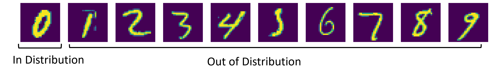
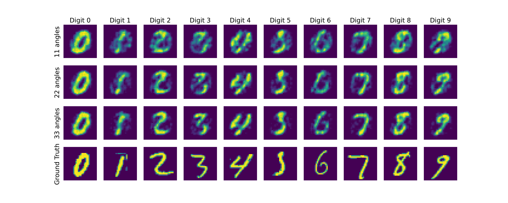
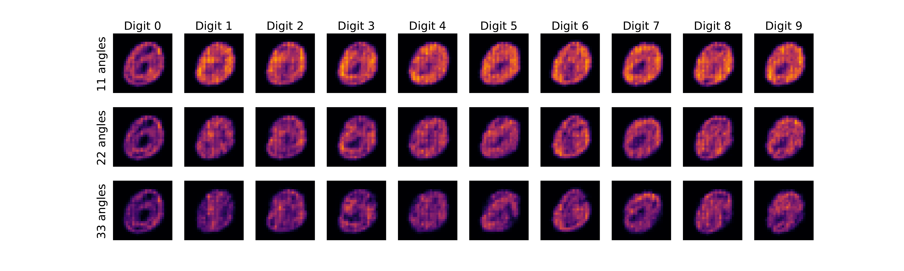
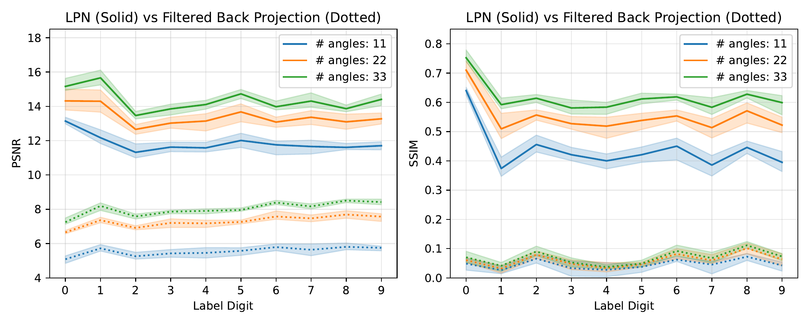
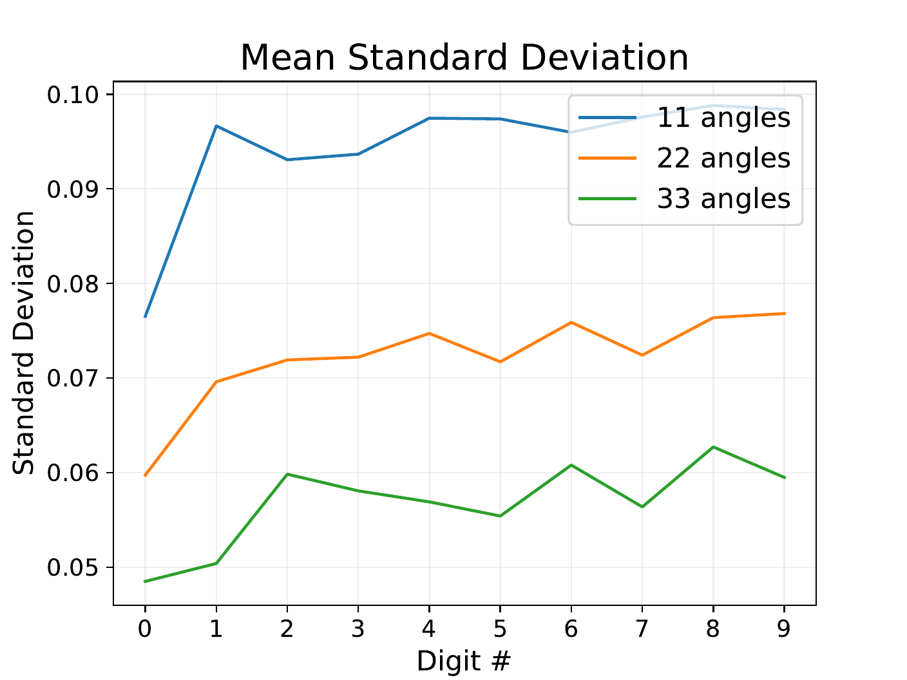

Subsample
Draw several random subsets of the available physical measurements.
VOILA Lab @ GT / arXiv 2025
A calibration-free, instance-level warning signal for when a generative prior is operating outside its training distribution.
Georgia Institute of Technology · VOILA Lab

Core idea
Instead of requiring a separate calibration dataset, reuse the measurements already available for the same object.
Draw several random subsets of the available physical measurements.
Apply the same pretrained generative prior to every subset.
Measure pixel-wise variation across the resulting reconstructions.
High instability flags likely distribution shift and hallucination risk.
Motivation
Generative priors can reconstruct useful images from dramatically fewer measurements, but their learned assumptions may fail silently when a new patient, scanner, or pathology differs from the training distribution.
We hypothesize that in-distribution targets remain stable when reconstructed from different random measurement subsets, while out-of-distribution targets vary more. That variation becomes an efficient, retraining-free uncertainty indicator for a single imaging instance.
Experiment
An input-convex learned proximal operator supplies the data-driven image prior.
The prior never sees the remaining nine digit classes during training.
Reconstruction is tested at 11, 22, and 33 projection-angle budgets.
PSNR, SSIM, and reconstruction variance are compared per digit.
Visual evidence



Key result
Average reconstruction standard deviation is lowest for the in-distribution digit “0” across all measurement budgets.
The gap is strongest with only 11 projection views—the regime where the learned prior has the greatest influence and distribution mismatch creates the most risk.

Scope
Advantages
The indicator wraps around an existing reconstruction prior and uses only repeated measurement subsets.
Initial evidence
MNIST makes training distribution and OOD classes explicit, revealing the mechanism cleanly.
Next step
Future work should test diverse modalities, pathologies, priors, and statistically calibrated thresholds.
Citation
@misc{kim2025distributionshift,
title = {Towards Distribution-Shift Uncertainty Estimation
for Inverse Problems with Generative Priors},
author = {Kim, Namhoon and Fridovich-Keil, Sara},
year = {2025},
eprint = {2510.10947},
archivePrefix = {arXiv},
primaryClass = {cs.CV}
}